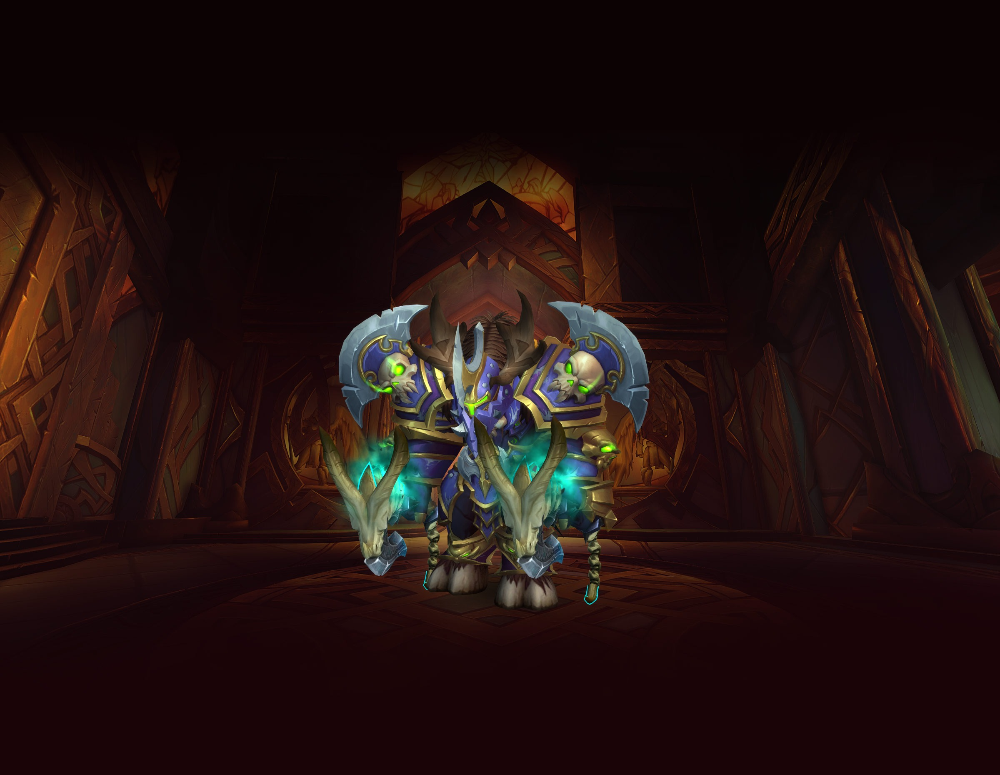
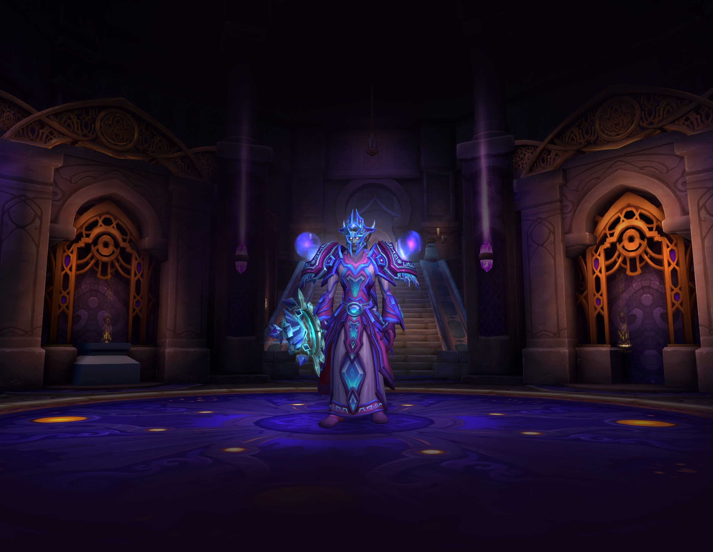

Warrior
For as long as war has raged, heroes from every race have aimed to master the art of battle...
Specializations
- Arms
- Fury
- Protection
Druid

Druids harness the vast powers of nature to preserve balance and protect life...
Specializations
- Balance
- Feral
- Guardian
- Restoration
Shaman

Shaman are spiritual guides and practitioners, not of the divine, but of the very elements...
Specializations
- Elemental
- Enhancement
- Restoration
Mage
Students gifted with a keen intellect and unwavering discipline may walk the path of the mage...
Specializations
- Arcane
- Fire
- Frost
Paladin

This is the call of the paladin: to protect the weak, to bring justice to the unjust...
Specializations
- Holy
- Protection
- Retribution
Warlock

In the face of demonic power, most heroes see death. Warlocks see only opportunity...
Specializations
- Affliction
- Demonology
- Destruction